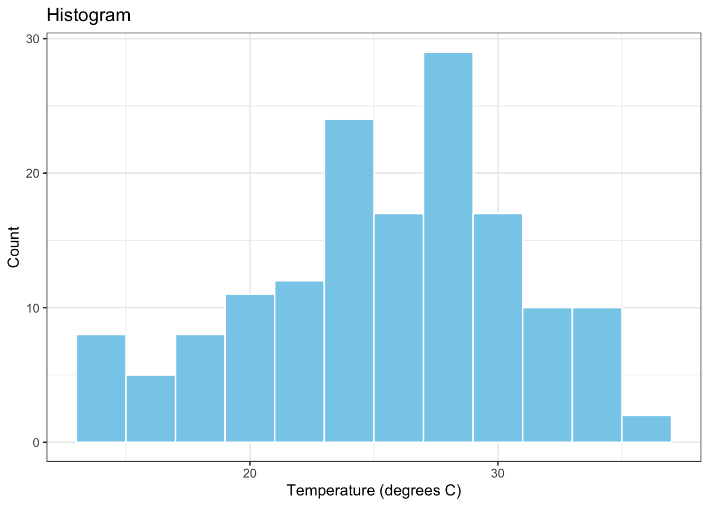

Layers in R
We all know that onions are made of layers. But did you know that, when working with R, you can break down statistical computations or data visualizations into separate layers? Each layer builds upon the previous layer and all layers together add up to produce the desired result. Performing a statistical computation or creating a data visualization in R is therefore akin to assembling an onion from its innermost to its outermost layer, one layer at the time.
To make things easy, let’s imagine that statistical computations are similar to red onions and data visualizations are similar to white onions. Both have layers, but their layers are different in nature. Statistical computations (e.g., transforming variables, computing summary statistics, fitting models) have computational layers, whereas data visualizations (e.g., producing histograms, creating scatterplots) have visualizations layers.
Once we master the underlying mechanism for adding together a series of computational layers (corresponding to a red onion) or a series of visualization layers (corresponding to a white onion), we can get creative and combine these two types of layers to get an onion which is half-white and half-red. In other words, we can combine together computational and visualization layers.
One of the reasons we have to distinguish between computational and visualization layers in R is that they get added to previous layers of the same kind via different R operators:
Computational layers get added via the pipe operator %>%; Visualization layers get added via the plus operator +. Another reason we have to distinguish between computational and visualization layers in R is because they are implemented using different R functions from possibly different R packages.
Computational Layers
Here is an example of a statistical computation in R (i.e., a red onion) which is made up of a series of computational layers. In this case, the red onion consists of computing the mean value of the Temp (i.e., daily temperature in degrees F), which comes from the airquality dataset in R but after converting the units of this variable from degrees F to degrees C. (F stands for Fahrenheit and C stands for Celsius.)
First, we load the airquality data into the current R session and we also load the packages dplyr and magrittr.
Next, we compute the mean of the re-expressed Temp variable using a series of three computational layers. The first layer (i.e., the innermost layer) is called airquality and simply declares the dataset we are working with. The second layer is called mutate and is used to re-express the Temp variable from degrees F to degrees C; the re-expressed variable is TempC. The third layer (i.e., the outermost layer) is called summarise and is used to compute the mean of TempC after excluding all missing values present in this variable.
airquality %>%
mutate(TempC = (Temp - 32) * 5 / 9) %>%
summarise(MeanTempC = mean(TempC, na.rm = TRUE)) MeanTempC
1 25.4902Upon executing the above R code, R will inform us that the mean value of the TempC variable is 25.4902 degrees C.
Visualization Layers
Here is an example of a data visualization in R (i.e., a white onion) which is made up of a series of visualization layers. In this case, the white onion consists of the histogram of the variable Temp (i.e., daily temperature in degrees F), which comes from the airquality dataset in R.
First, we load the airquality data into the current R session and we also load the data visualization package ggplot2.
Next, we create the histogram of the variable Temp from a series of 5 distinct visualization layers. The first layer (i.e., the innermost layer) is called ggplot and declares the data to be used for the plot and the variable to be plotted. The second layer is called geom_histogram and creates the histogram itself. The third and fourth layers are called xlab and ylab, respectively, and are used to add labels to the horizontal and vertical plot exes. The fifth layer is called ggtitle and creates a plot title. The sixth layer (i.e., the outermost layer) is called theme_bw() and controls the visual appearance of the plot through a black and white theme.
Computational AND Visualization Layers
What if we wanted to plot the histogram of the re-expressed temperature variable, TempC? How would we combine the computational layers involved in obtaining this variable (i.e., the red onion layers) with the visualization layers involved in plotting its distribution using a histogram (i.e., the white onion layers)? Here is the necessary R code for achieving this task:
airquality %>%
mutate(TempC = (Temp - 32) * 5 / 9) %>%
ggplot(data = ., aes(x = TempC)) +
geom_histogram(binwidth = 2, colour="white", fill="skyblue") +
xlab("Temperature (degrees C)") +
ylab("Count") +
ggtitle("Histogram") +
theme_bw()
In the above, the first two layers are computational layers and the remaining six layers are visualization layers. The two types of layers are added to each other via the pipe operator %>% inserted between the mutate and the ggplot layers.
Summary
Next time you see or write R code which involves computational and/or visualization layers, you should be able to recognize that all that code is doing is building up onions – red, white or a mixture of red and white – from their innermost layer to their outermost one.